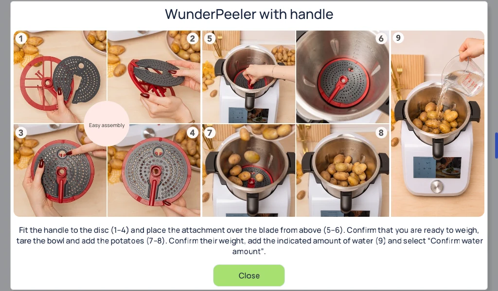
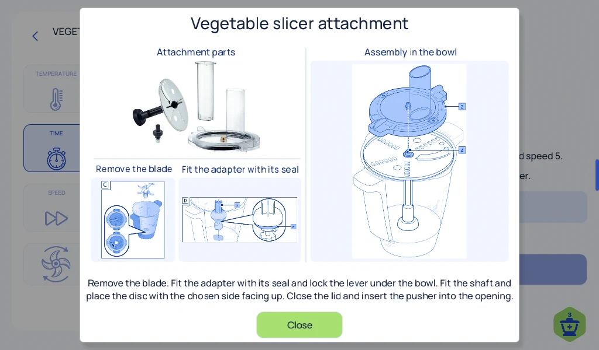
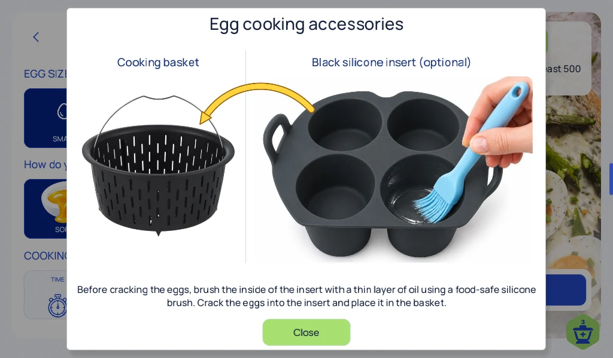
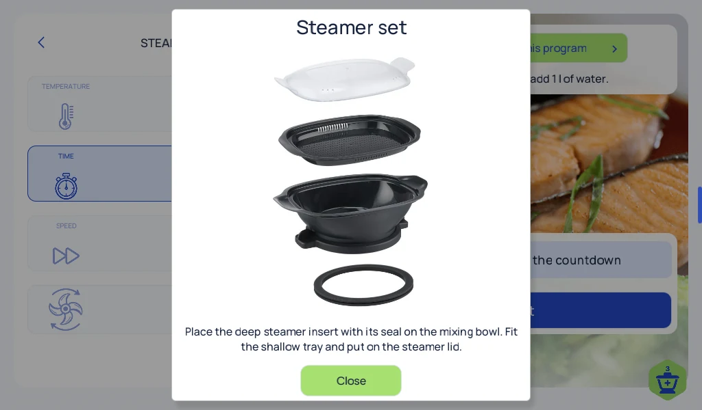
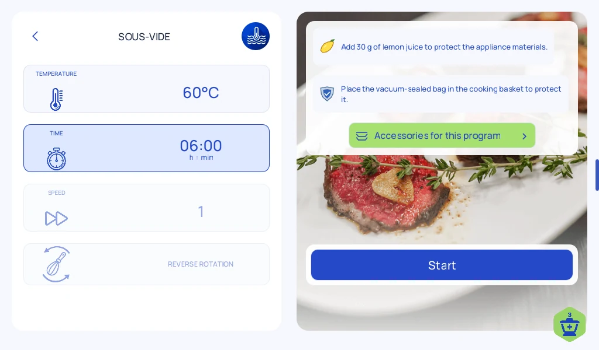
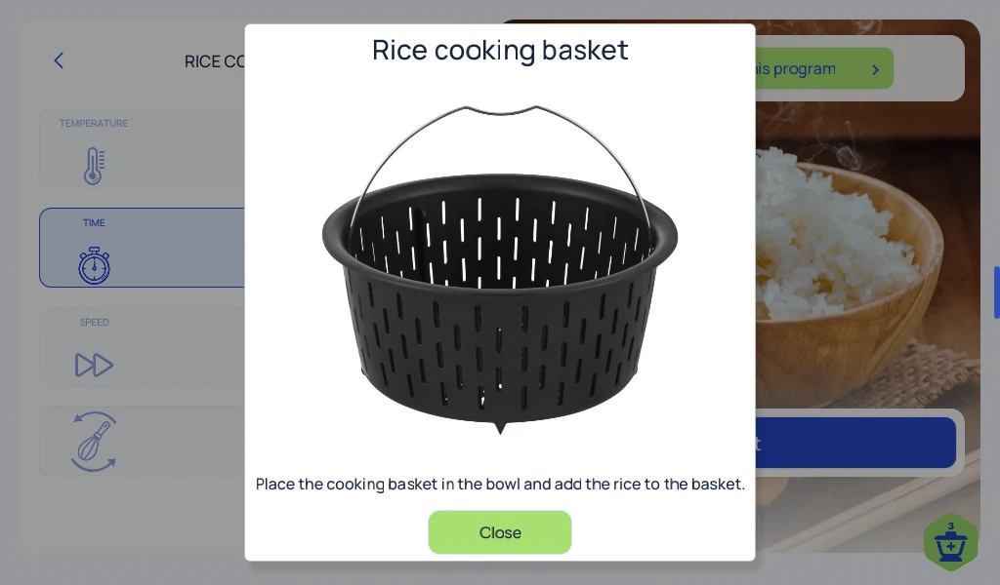
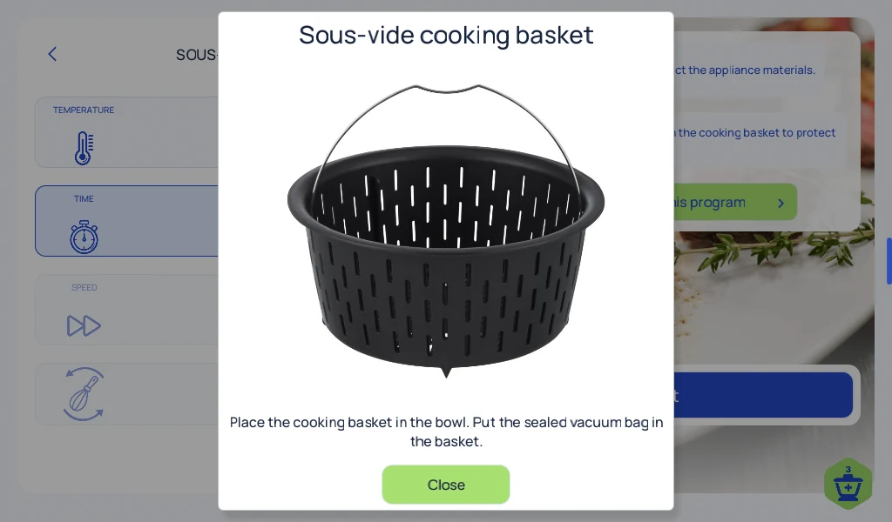
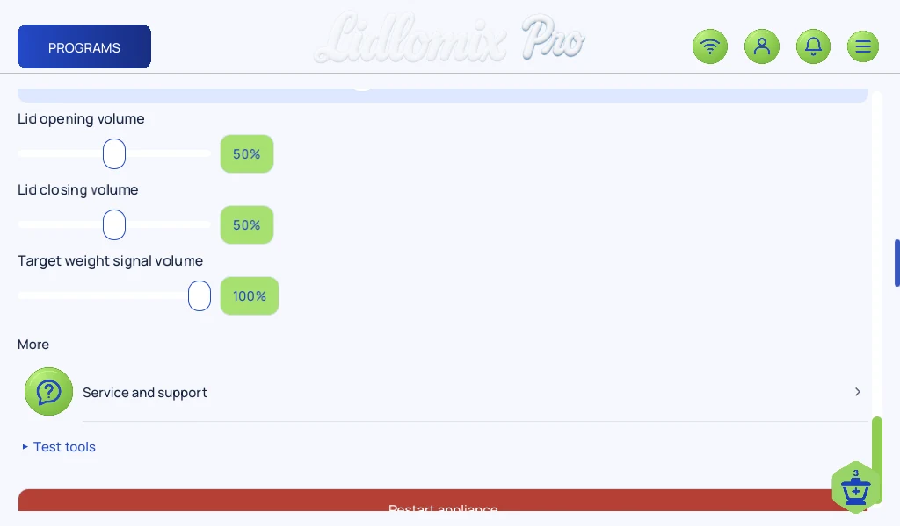
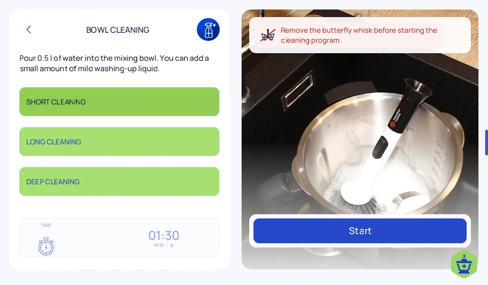
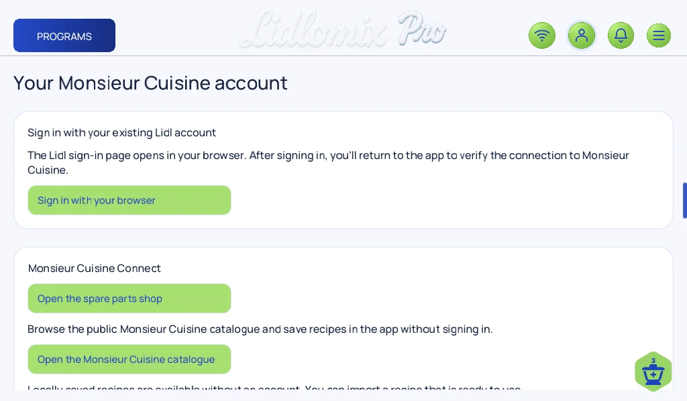

Monsieur Cuisine Connect ·
From 0.17.8 to 0.19.1
These releases added a potato peeling programme with weighing, instructions for fitting accessories and online recipe catalogue updates. The screenshots show how those features look on the Connect today.
Potato peeling and tooltips in programs
In the peeling programme, the scale waits for you to confirm that you are ready. This gives you time to fit the WunderPeeler onto the blade from above. After taring the bowl, confirm the weight of the potatoes and then the amount of water added. The screen keeps the confirmed reading visible so you can close the bowl. The current guide has nine panels and ends by showing how to add water.

The Accessories button for this program opens the instructions for the selected program. The cutting adapter has a view of the elements and a blue assembly scheme in the bowl. The default cutting time is one minute. In cooking eggs you can see baskets and optional black silicone cartridge. The yellow arrow shows where to put the mould, and the illustration reminds of oiling it before inserting the eggs.




Steaming shows another element of steaming. Cooking rice and Sous-video show baskets. In Sous-video, the shield means a recommendation to secure the vacuum bag in the basket, and the yellow lemon distinguishes the hint of adding 30 g lemon juice.








Weight signal, heating and washing
The sound settings were accompanied by the opening and closing volume of the lid and the separate volume of the signal to achieve the desired mass. The next amendment strengthens the weight signal file itself. In Water Heating, the Connect controller uses a heating setting equivalent to 120°C to reach the 100°C target faster. The temperature reading remains visible at the end of the program.
In short and long cleaning, the rotations grow gradually to the prescribed speed, by one level every half a second. Before changing direction, the blade shall brake for at least three seconds. The butterfly image message appears in the program of washing, in Smoothie, in Mixing on the purée and at speeds of 5–10 in Own settings.




Directory and updates over the Internet
In the Catalogue page all MC recipes use the factory source. The customised Pro has a separate directory to which updates of recipes and photos are sent. You can switch from a downloaded database to a built-in directory. View My names have filters “All”, “Backgrounds” and “Created”.

The Update Menu separates the rule base from the robot application. When downloading, it shows the percentage, and when checking and unpacking it shows the stage name. The “Check Updates” button is aligned with the other fields. On Connect, I checked to download a stable revision of the database and to go to the message “Catalogue verified”. The installation of the regulations is confirmed by the user. During this test, an update of the database was available in a stable channel.

Settings, Firefox and spare parts
Settings got larger tile-style icons on the program screen. Wi-Fi icons, accounts, updates and menus on the top bar are smaller. On the left, the button continues to switch “Programs” and “Provisions”. The additional reverse arrow has been removed.
The login button to Monsieur Cuisine's account launches the Lidl login form directly in Firefox. On the same screen, the “Open shop with spare parts” button leads to the Connect category in the Monsieur Cuisine store. On the device, I checked the opening of both sides.

List of changes from 0.17.8
- 0.17.8 — default tap volume of 10%. Previous entry and drop.
- 0.17.9 — the first potato peeling program with WunderPeeler weighing, guidance and support screen.
- 0.18.0 — order of headers and fields in vegetable peeling and cutting programs.
- 0.18.1 — Test version of peeling with automatic change of direction during the cycle.
- 0.18.2 — change in the first phase of the test cycle.
- 0.18.3 — first compilation with additional lid sounds and mass achievement.
- 0.18.4 — separate volume sliders for opening the lid, closing the lid and gaining weight.
- 0.18.5 – adjust the sounds and check whether the volume settings are saved after the update.
- 0.18.6 — the first version of the robot with an Internet updates screen and beta channel support.
- 0.18.7 — attempt to download and open a test update of the photo directory.
- 0.18.8 — Attempts to incremental the database and transmit a verified update to the Android installer.
- 0.18.9 — separated the two recipe sources, All MC recipes and Adapted for Pro.
- 0.19.0 — a separate view of “My Names” and its filters in Customized Pro.
- 0.19.1 — the upgrade client's transition to a stable channel and an attempt of a real base package on Connect.
- Later compilation 0.19.1 — confirmation of weighing in peeling, heating and washing changes, accessories graphics, butterfly warnings, refreshed icons, login in Firefox, parts store, and update bar.